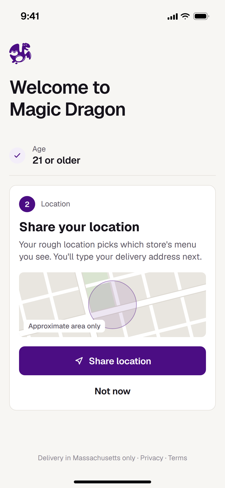
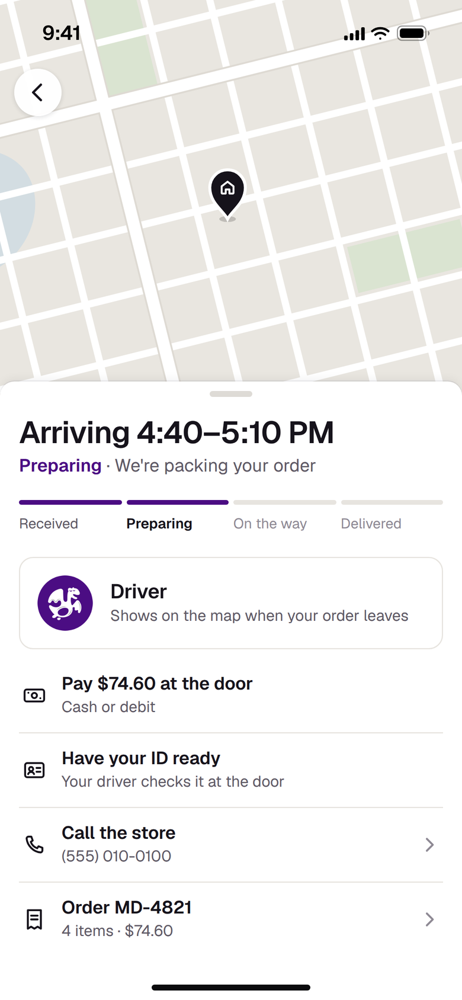
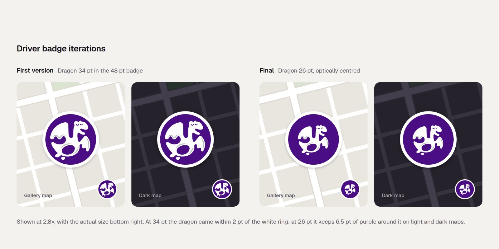
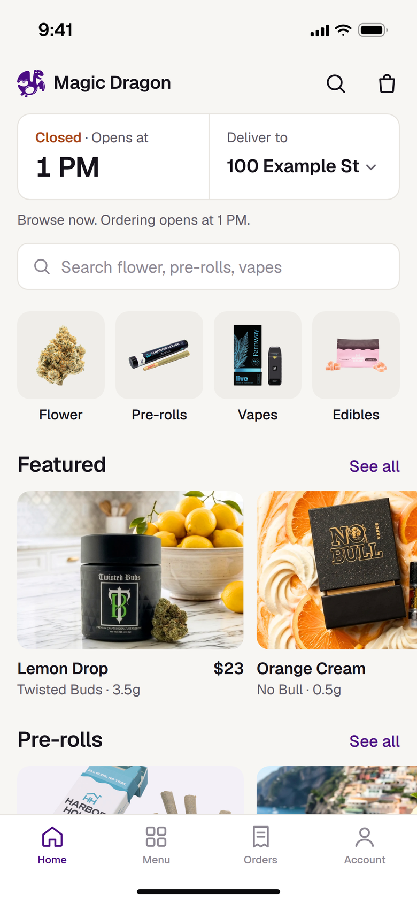

Magic Dragon: ordering a regulated delivery from your phone
Magic Dragon delivers cannabis to adults in Massachusetts. Every order comes with rules: proof of age, an ID check at the door, a daily limit, cash or debit only, no discount advertising. I designed the iPhone app to handle those rules quietly and always answer one question: when will it get here?
- Type
- Real product, 2026
- Platform
- iOS first, plus the mobile website
- My role
- Founder and design lead: product decisions, flows, UI, motion, Figma system
- Scope
- 24 screens, 4 flows, 194 prototype links, a Figma system

The problem
Delivery apps are a solved pattern. Regulated delivery isn't.
- The platforms disagree. Apple allows licensed cannabis ordering; Google Play bans it. iPhone gets a native app and Android an installable website, from one codebase.
- The state sets the copy. No discount banners or promo tabs. The interface has to sell with clarity and photography.
- A person meets every order at the door. The driver checks ID and takes payment. Customers want an exact time, and other customers on the route deserve privacy.
Goals
Always answer "when"
A delivery time on Home before anything else, and a live, honest one after ordering.
Ask once, for the right thing
Age and location up front in a single step, and nothing more until it's needed.
No surprises at the door
Payment, ID and the total are settled in the app before the driver arrives.
Protect everyone on the route
Show customers their driver only when it helps them, and never anyone else's stop.
Key decisions
Loading becomes the brand moment
Instead of a spinner, a pen draws the dragon while the menu loads: head first, eyes last, then a soft lavender fill. If loading runs long it redraws calmly, and it always finishes from wherever the pen is. That tinted drawing became the logo, since it sits lighter on white than the old solid mark. With Reduce Motion on, the finished mark simply appears.
Age and location in one step
Both required questions share one screen. Rough location, rounded to about a kilometer, only picks which store's menu you see. The exact address is typed when it matters, and "Not now" never blocks anyone.


Lead with when, not deals
With discount banners off the table, Home leads with what's useful: open now, 40 to 50 minutes. Real product photography does the selling.


Product pages answer three questions
How strong, how much, and was it tested? THC, size and the lab date sit in one row, the state's warning is plain text, and the price is on the button.

The bag settles what happens at the door
The bag says how the driver gets paid and that they'll check ID, so nobody is caught without either at the door.

Tracking that protects everyone on the route
A driver carries several orders, so a live map from the start would show customers where other people live. Tracking shows the window and "2 stops before you", and the map appears only on the last leg: the driver and your home, nothing else. A stale location fades and says when it was last seen.

A driver marker you can recognize
My first badge crowded the dragon against the ring, and it blurred at map size. A smaller dragon reads at a glance on light and dark maps.

Edge cases get designed, not left as errors
A closed shop says when it opens. A problem says what happened and what to do. Declining location just means typing an address.


Deleting an account without losing what the law requires
Apple requires in-app deletion; the state requires keeping age and recall records. Deleting erases email, addresses, favorites and marketing consent, keeps name, phone, birth date and orders, and says so before anything happens.
The same care on the website
Android customers order on the website, so its order page got the app's status card and lost the clutter.

The journey

Try it
Every button works. On a phone it fills the screen.
The Figma file
Every screen as editable layers, wired as a prototype, on a small design system:
- Color variables for surfaces, text, brand purple, the add-to-bag yellow and status colors.
- Text styles in Geist, from the delivery-time display down to the fine print.
- Components with variants: Button (style and state), Chip, Product card, Add and stepper, the four-step order progress, Driver card (live, updated, last seen), Driver badge and Tab bar.
- Sections for onboarding, shopping, account, orders and tracking, and edge cases, each frame annotated with the reasoning behind it.
- A motion page with timing specs for the drawn dragon, the open-now pulse and the driver marker.

How I worked
I set the rules, flows and copy, and used an AI coding assistant to build them into the app and this prototype. That made it cheap to try a screen on a phone and change it the same day.
Results and what's next
- Real numbers go here: orders delivered, repeat customers, support contacts about "where's my order".
- The iPhone app is in pre-release; the website serves Android and desktop customers today.
- Next I'd measure whether the stop count cuts "where's my order" calls, and how many first orders finish after a Not now.
Product names, photos and prices are from the live menu. Customer names, addresses and phone numbers are made up.